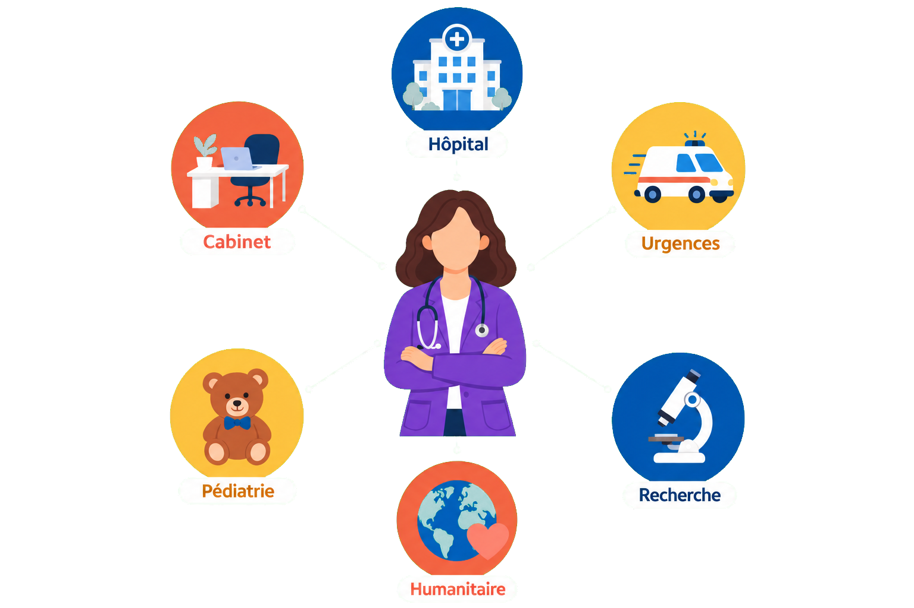
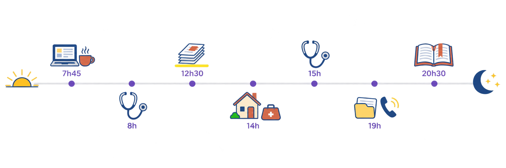
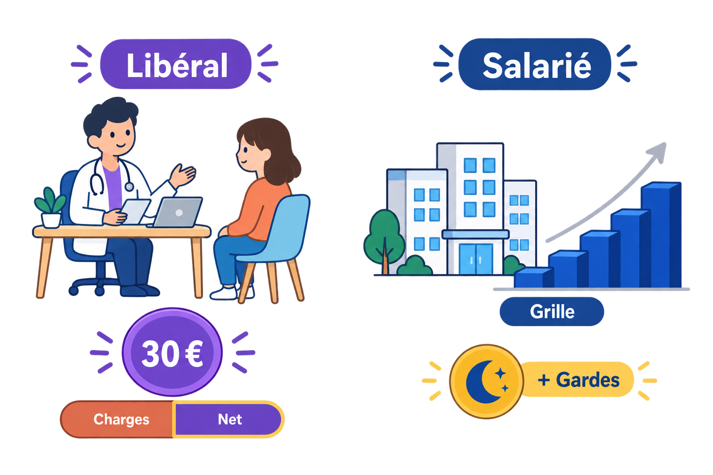
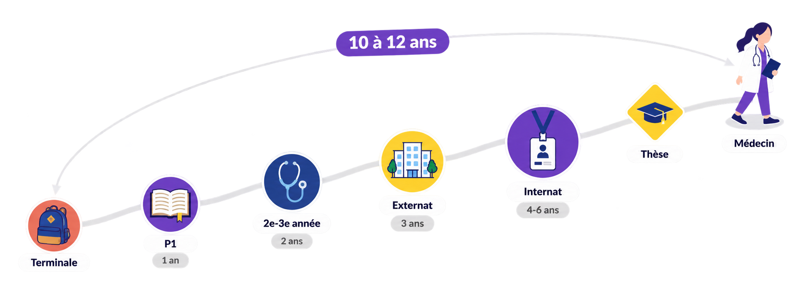
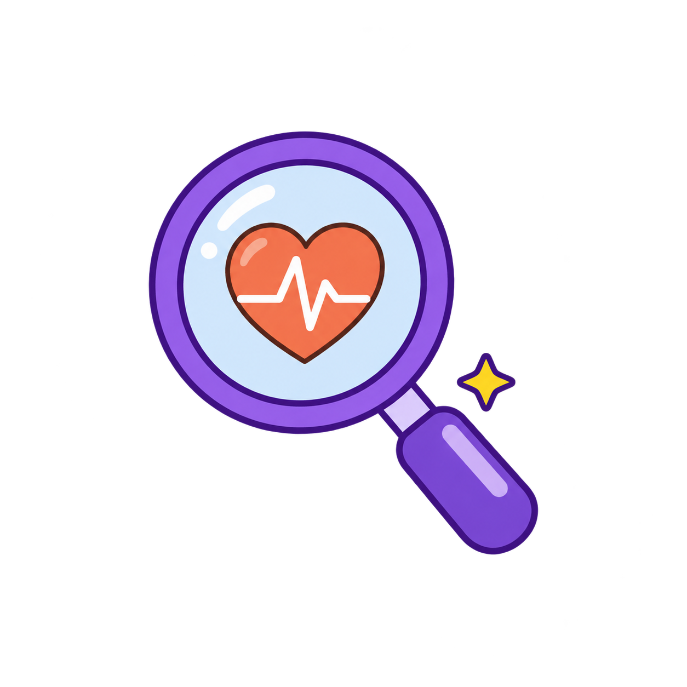

Médecin : le métier en vrai
Sur 1 000 personnes qui ont mal quelque part, 250 poussent la porte d'un cabinet… et une seule finit au CHU, l'hôpital universitaire. Le médecin veille sur tout ce chemin.
Un seul diplôme, mille façons de l'exercer — et un salaire dès l'internat.

à placer dans : /public/images/metiers/
Petite illustration SANS fond (PNG transparent) : un médecin au centre entouré de six pastilles pictogrammes (cabinet, hôpital, urgences, pédiatrie, humanitaire, recherche).
Sauver des vies, porter la blouse, être la personne qu'on appelle quand rien ne va plus : le métier de médecin fait rêver depuis toujours. On le résume souvent à guérir, alors qu'il se joue sur trois terrains : prévenir avant que la maladie arrive, guérir quand c'est possible, et accompagner quand la guérison n'est plus l'objectif — ce dernier terrain n'étant pas réservé à la fin de vie. La réalité est à la fois plus simple et plus riche que dans les séries : écouter, mener l'enquête, décider, accompagner — avec de vraies personnes en face, chaque jour. Et c'est un métier qui se vit de mille façons : au cabinet, à l'hôpital, en maison de santé, en mission humanitaire ou en laboratoire. Sur cette fiche, on te montre à quoi ressemble vraiment le quotidien, pour que tu puisses te projeter les yeux ouverts.
Ta journée si tu deviens généraliste
- 1 7h45 — Ouverture. Tu ouvres le cabinet, tu allumes l'ordinateur et tu jettes un œil aux résultats d'analyses arrivés dans la nuit. Le premier patient sonne déjà.
- 2 8h — Consultations. Un nourrisson à vacciner, une entorse de cheville, une grand-mère qui vient surtout pour parler. À chaque fois, la même démarche : écouter, formuler des hypothèses, examiner, décider.
- 3 12h30 — Pause… et administratif. Courriers aux spécialistes, ordonnances à renouveler, dossiers à mettre à jour : c'est la face cachée du métier.
- 4 14h — Visite à domicile. Chez un patient âgé qui ne peut plus se déplacer. Là, tu vois la personne dans sa vraie vie — et c'est souvent là qu'on comprend le mieux.
- 5 15h — Retour au cabinet. La règle d'or du généraliste : penser d'abord au banal, sans jamais rater le cas rare qui doit filer à l'hôpital.
- 6 19h — Derniers dossiers. Dernier patient parti, tu termines les dossiers du jour et tu rappelles le laboratoire pour un résultat que tu veux vérifier.
- 7 20h30 — Un œil sur la science. Un peu de lecture médicale ou une formation à distance : la médecine évolue en permanence, et se former toute sa vie fait partie du métier.

à placer dans : /public/images/metiers/
Bandeau fin SANS fond (PNG transparent) : ligne du temps soleil → lune, sept petits pictogrammes horodatés.
Où tu peux exercer
- 1 Libéral — ton propre patron. Seul en cabinet ou en maison de santé avec d'autres soignants ; ta patientèle te suit pendant des années. Grande liberté d'organisation : tu fixes tes horaires, tes jours de consultation, et le rythme que tu veux tenir. Tu peux même exercer comme remplaçant — tu remplaces des médecins pendant leurs congés, d'un cabinet à l'autre, d'une région à l'autre : de quoi travailler partout en France, voir plusieurs façons d'exercer et voyager, avant de choisir où t'installer. En échange : pas de congés payés ni de RTT, et une charge de travail qui dépend entièrement du rythme que tu te fixes.
- 2 Salarié — l'équipe et la stabilité. À l'hôpital ou en centre de santé : salaire fixe, congés payés, temps de travail plafonné par la loi à 48 heures par semaine. En échange, tu suis les horaires de la structure.
- 3 Mixte — les deux à la fois. Tu es installé en libéral et tu fais des vacations (des demi-journées payées à l'hôpital) ou des gardes : l'autonomie du cabinet et la vie d'équipe dans la même semaine. Il faut aimer jongler.
Combien tu gagnes — et comment
- 1 En libéral : payé à l'acte. Pas de salaire : chaque consultation rapporte 30 € (tarif fixé par l'Assurance Maladie, secteur 1). Mais honoraires ≠ revenu : environ la moitié part en charges — sur 30 € encaissés, il reste 15 à 17 € avant impôt. Un généraliste installé gagne en moyenne ≈ 8 000 € net par mois — les sources vont de ≈ 7 400 à 8 200 € selon qu'on interroge l'étude publique ou la caisse de retraite des médecins. Un jeune installé démarre souvent vers 5 000 à 6 500 €. Ton revenu suit directement le nombre de consultations que tu choisis d'assurer.
- 2 À l'hôpital : une grille + des gardes. Le praticien hospitalier est payé sur une grille nationale à 13 échelons qu'on gravit à l'ancienneté : de ≈ 3 900 € net par mois au 1ᵉʳ échelon à ≈ 7 900 € au 13ᵉ — la grille exacte est dans le livret ci-dessous. Temps plein = 10 demi-journées par semaine, dans la limite légale de 48 h ; les gardes et astreintes s'ajoutent au salaire.
- 3 L'internat est déjà salarié — modestement. Les 4 à 6 dernières années d'études — l'internat, qui commence en 7ᵉ année après le bac — sont payées par l'hôpital. En 1ʳᵉ année d'internat, le salaire de base est de ≈ 1 300 € net par mois ; avec l'indemnité versée les deux premières années, on arrive à ≈ 1 600 €, et les gardes s'ajoutent (≈ 190 € net la nuit — avec 3-4 gardes par mois, on dépasse les 2 000 €). En face, de vraies semaines : 48 h maximum légal, ≈ 59 h en réalité (de ≈ 50 h en médecine générale à ≈ 75 h en chirurgie, selon les enquêtes des syndicats d'internes). C'est peu payé au regard des heures — mais tu n'attends pas le diplôme pour commencer à gagner ta vie, et le détail année par année est dans le livret ci-dessous.
📖 La grille de l'interne, année par année›
Le salaire de base est fixé par arrêté : 19 406,35 € brut par an en 1ʳᵉ année (arrêté du 8 juillet 2022), soit ≈ 1 300 € net par mois avant toute indemnité — c'est le chiffre « bas » qu'on entend souvent. Les montants du tableau ajoutent les indemnités fixes (mais pas les gardes) :
| Année d'internat | ≈ net / mois (hors gardes) | Ce qui est compté |
|---|---|---|
| 1ʳᵉ année | ≈ 1 600 € | ≈ 1 300 € de base + indemnité de sujétion (435,18 € brut/mois, versée les 4 premiers semestres seulement) |
| 2ᵉ année | ≈ 1 750 € | base + indemnité de sujétion |
| 3ᵉ année | ≈ 1 900 € | base seule : la sujétion s'arrête, la base augmente |
| 4ᵉ année | ≈ 2 000 – 2 050 € | prime de responsabilité incluse (179,50 € brut/mois) — hors médecine générale, où la 4ᵉ année est déjà l'année de docteur junior |
| 5ᵉ année | ≈ 2 100 – 2 150 € | prime de responsabilité incluse (356,16 € brut/mois) |
| Docteur junior (dernière année) | ≈ 2 200 – 2 300 € | l'année en autonomie supervisée qui clôt l'internat — la 4ᵉ année en médecine générale, la 5ᵉ ou 6ᵉ ailleurs |
Gardes en plus : 234,80 € brut la nuit de semaine (≈ 190 € net), 256,86 € la nuit du samedi au dimanche, le dimanche ou un jour férié — montants en vigueur depuis le 1ᵉʳ janvier 2024 (arrêté du 22 décembre 2023, revalorisation pérenne de 50 %). Avec 3 à 4 gardes par mois : ≈ + 550 à 750 € net.
⏱️ Le temps de travail en face : 48 h par semaine maximum légal, gardes comprises — mais les enquêtes des syndicats d'internes mesurent ≈ 59 h en moyenne (≈ 50 h en médecine générale, jusqu'à ≈ 75 h en chirurgie), et 8 internes sur 10 dépassent le plafond.
📖 La grille du praticien hospitalier — les 13 échelons›
| Échelon | Durée | Brut annuel | ≈ net / mois |
|---|---|---|---|
| Échelon 1 | 2 ans | 55 607,79 € | ≈ 3 900 € |
| Échelon 2 | 2 ans | 58 082,41 € | ≈ 4 050 € |
| Échelon 3 | 2 ans | 62 148,07 € | ≈ 4 350 € |
| Échelon 4 | 2 ans | 66 567,09 € | ≈ 4 650 € |
| Échelon 5 | 2 ans | 68 688,21 € | ≈ 4 800 € |
| Échelon 6 | 2 ans | 71 162,83 € | ≈ 5 000 € |
| Échelon 7 | 2 ans | 76 465,74 € | ≈ 5 350 € |
| Échelon 8 | 2 ans | 79 647,54 € | ≈ 5 600 € |
| Échelon 9 | 4 ans | 90 549,14 € | ≈ 6 350 € |
| Échelon 10 | 4 ans | 94 557,64 € | ≈ 6 600 € |
| Échelon 11 | 4 ans | 99 810,26 € | ≈ 7 000 € |
| Échelon 12 | 4 ans | 105 062,89 € | ≈ 7 350 € |
| Échelon 13 | dernier | 112 416,56 € | ≈ 7 900 € |
Grille nationale des émoluments au 1ᵉʳ juillet 2023 (source MACSF). Le net mensuel est une estimation avant impôt. Il faut environ 32 ans pour atteindre le 13ᵉ échelon. S'ajoutent les gardes et astreintes (une astreinte : environ 70 à 280 € la nuit) et diverses primes d'engagement.
📖 Le libéral n'a pas de grille : la simulation›
Hypothèses de la simulation : 4,5 jours de consultations par semaine (le rythme classique du généraliste : une demi-journée libérée dans la semaine, en plus du week-end) et 46 semaines travaillées par an (≈ 6 semaines de congés — non payés en libéral).
| Rythme (sur 4,5 j / semaine) | Honoraires / mois | ≈ net avant impôt |
|---|---|---|
| 20 patients / jour | ≈ 10 350 € | ≈ 5 200 € |
| 25 patients / jour | ≈ 12 900 € | ≈ 6 500 € |
| 30 patients / jour | ≈ 15 500 € | ≈ 7 800 € |
Base : consultation à 30 € (secteur 1), ≈ 50 % de charges. S'ajoutent les forfaits versés par l'Assurance Maladie (suivi de ta patientèle de médecin traitant, objectifs de santé publique), soit ≈ 10 à 15 % de plus : c'est ainsi que la moyenne nationale ressort à ≈ 8 000 € net.

à placer dans : /public/images/metiers/
Petite illustration SANS fond (PNG transparent) : scène libéral (patient → 30 € → barre charges/net) à gauche, scène salarié (escalier de grille + gardes) à droite.
Le chemin depuis la Terminale

à placer dans : /public/images/metiers/
Bandeau SANS fond (PNG transparent) : chemin montant à six jalons avec durées, losange thèse, arc « 10 à 12 ans ».
- 1 Terminale — Parcoursup. Tu formules tes vœux pour rejoindre les études de santé. Un dossier régulier et des spécialités scientifiques sont tes meilleurs alliés.
- 2 La P1 (voies PASS ou LAS) — 1 an. L'année d'entrée : les bases scientifiques du corps humain, et un classement qui décide de ton admission en 2ᵉ année. Ce n'est pas réservé aux génies : ceux qui la réussissent sont très souvent ceux qui arrivent avec une vraie méthode de travail dès les premières semaines.
- 3 2ᵉ et 3ᵉ années — 2 ans. La sélection est derrière toi. Tu approfondis les sciences médicales, tu découvres la sémiologie (l'art de reconnaître les signes des maladies) et tu fais tes premiers stages.
- 4 L'externat — 3 ans. La moitié de ton temps se passe à l'hôpital, au contact des patients. En 6ᵉ année, les épreuves nationales (EDN puis ECOS) classent les étudiants : ce classement te permet de choisir ta spécialité et ta ville.
- 5 L'internat — 4 à 6 ans. Tu es un médecin en formation, salarié de l'hôpital : tes propres patients, tes prescriptions, tes gardes — toujours encadré. Médecine générale : 4 ans ; spécialités chirurgicales : jusqu'à 6 ans.
- 6 La thèse — et ton premier jour. Tu soutiens ta thèse : te voilà docteur en médecine. Reste à choisir ta façon d'exercer : cabinet, hôpital, remplacements, seul ou en équipe.
À suivre : une « licence santé » unique a été annoncée en avril 2026 pour remplacer le PASS et la LAS, visée pour la rentrée 2027 — le calendrier peut encore bouger, et le PASS et la LAS restent en place pour la rentrée 2026. Quel que soit son nom, la première année restera classante.

à placer dans : /public/images/metiers/
Mini-illustration SANS fond (PNG transparent) : une loupe violette, un cœur avec tracé cardiaque dans la lentille. Aucun texte.